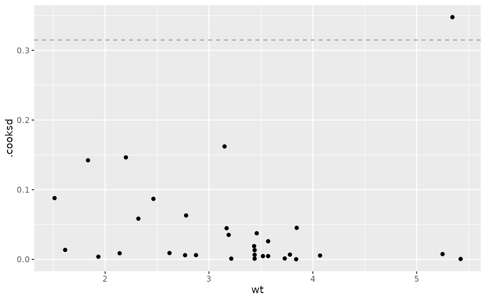

A function to display stats::cooks.distance().
parameters supplied to ggally_nostic_line
4 / n is the general cutoff point for Cook's Distance
ggplot2 plot object
A line is added at \(F_{p,n-p}(0.5)\) to display the general cutoff point for Cook's Distance.
Reference: Michael H. Kutner, Christopher J. Nachtsheim, John Neter, and William Li. Applied linear statistical models. The McGraw-Hill / Irwin series operations and decision sciences. McGraw-Hill Irwin, 2005, p. 403
# Small function to display plots only if it's interactive
p_ <- GGally::print_if_interactive
dt <- broomify(stats::lm(mpg ~ wt + qsec + am, data = mtcars))
p_(ggally_nostic_cooksd(dt, ggplot2::aes(wt, .cooksd)))
